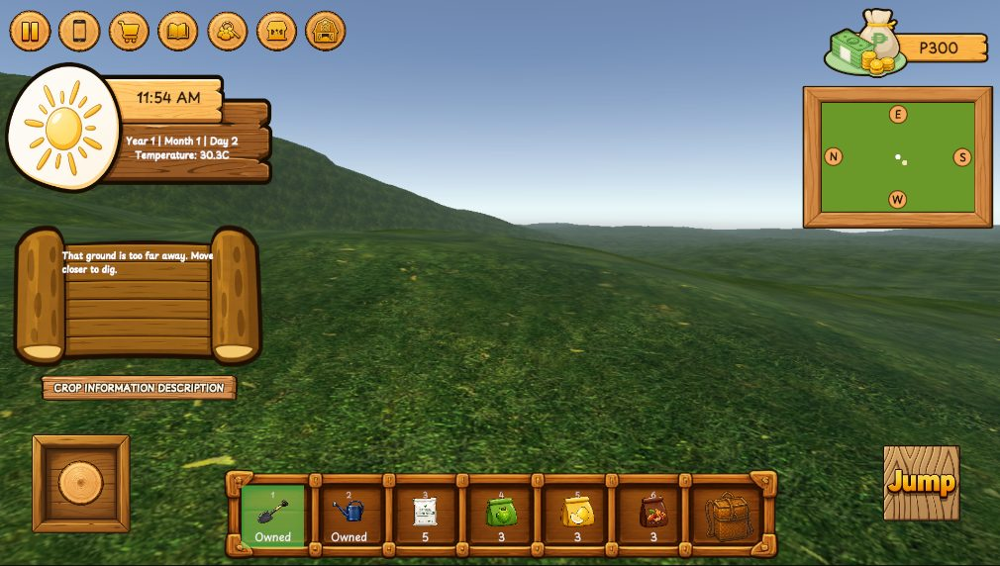
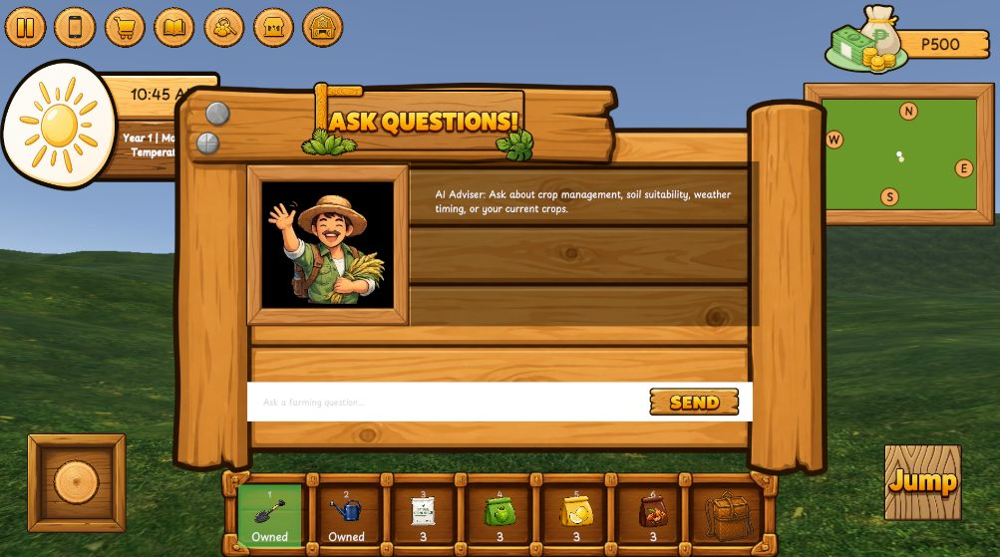
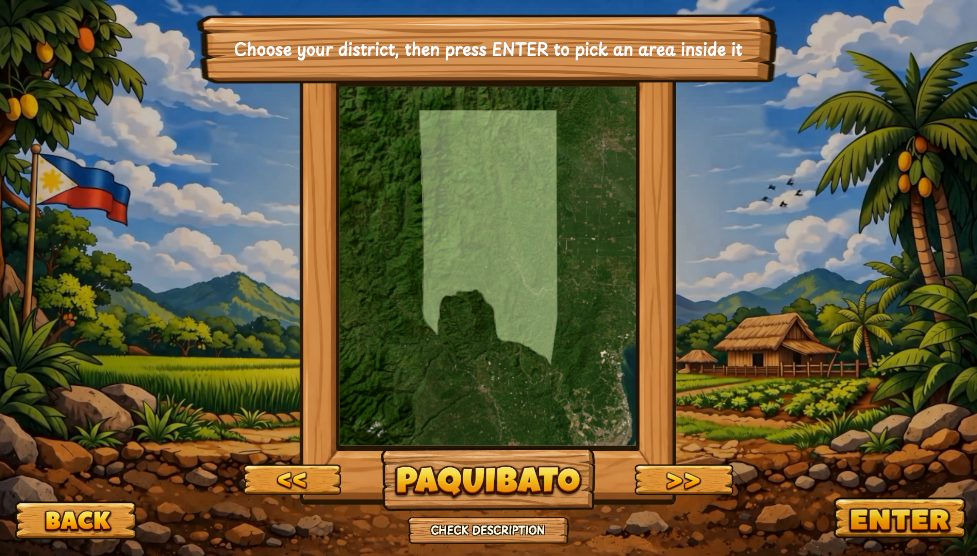
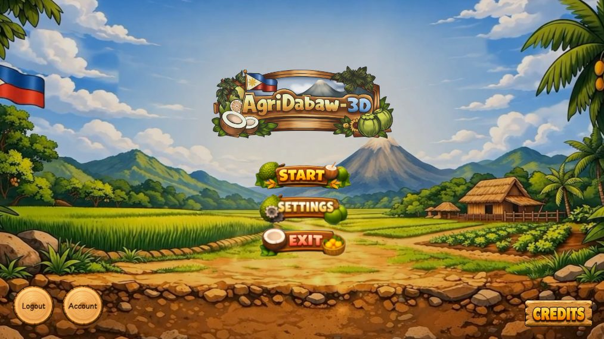
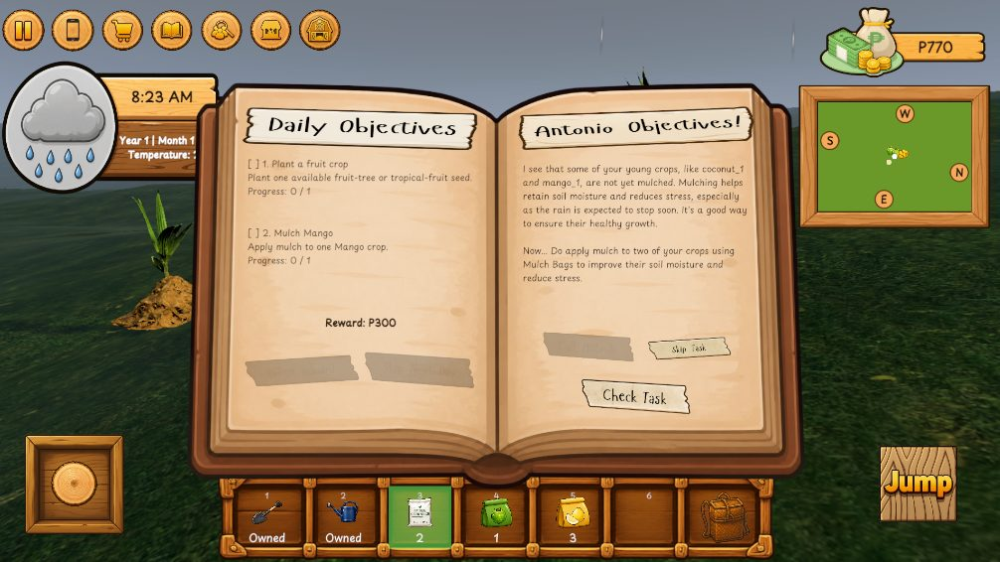
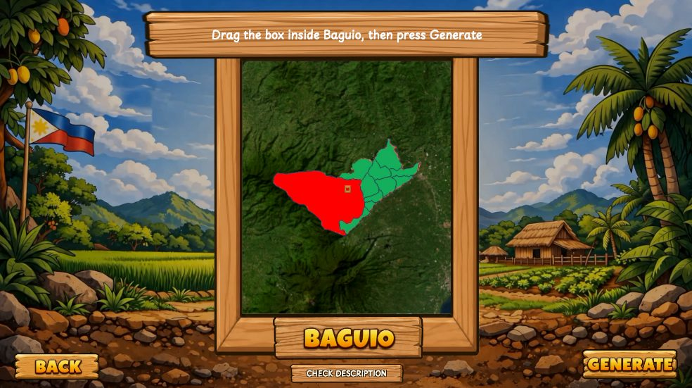
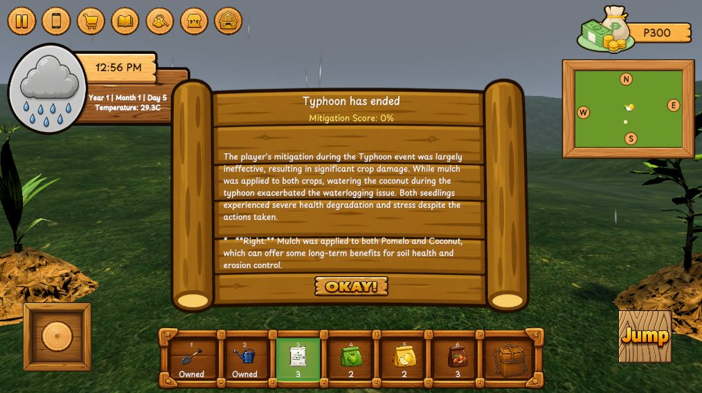
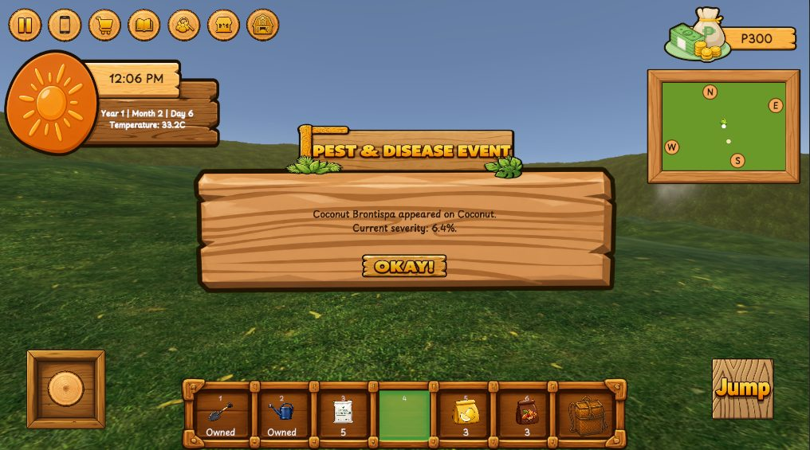

A Simulation Game with AI-Advisor for Localized Farming Techniques
Learn farming, connect with others, think critically, and experience agriculture — all in one interactive 3D world set in Davao City.



What is AgriDabaw-3D
An interactive 3D farm you can actually learn from.
AgriDabaw-3D is an interactive 3D farming simulation game made for everyone — whether you are a student, a gamer, or simply curious about agriculture. Learn the basics of farming, discover how crops grow, and experience how farmers make decisions to keep their farms productive.
Plant and manage crops, maintain your farm, respond to climate events, pests, and diseases, and make informed farming decisions in a safe and engaging virtual environment. With the AI Advisor, players receive agricultural guidance and situation-based tasks while learning through gameplay.
The multiplayer chatbox encourages communication and collaboration with other players, while the trading feature develops critical thinking and decision-making as players manage resources and negotiate exchanges.


The problem it solves
Learning to farm should not require owning a farm.
AgriDabaw-3D addresses the limited availability of localized, interactive, and repeatable agricultural learning opportunities. Learners may have limited access to land, facilities, equipment, materials, time, and supervision needed for hands-on farming activities. Existing approaches also provide limited opportunities to repeatedly practice farming decisions, experience agricultural risks, and observe their consequences in a controlled environment.
- 01
Limited practical resources
Learners have unequal access to facilities and materials for hands-on agricultural learning.
- 02
Passive learning
Traditional approaches may limit active exploration, interaction, and immediate feedback.
- 03
Limited risk-scenario exposure
Learners have few opportunities to repeatedly experience and respond to drought, flooding, typhoons, and other agricultural risks.
- 04
Limited localized context
General agricultural knowledge may not sufficiently reflect Davao City's crops, soil, and climate conditions.
- 05
Limited repeated practice
Real-world farming requires land, resources, time, and suitable growing conditions, making repeated experimentation difficult.
AgriDabaw-3D aims to provide a safe, interactive, and localized virtual environment where anyone can learn farming, practice decisions, experience simulated agricultural challenges, and observe their consequences — without the immediate costs and risks of real-world farming.
Learn, play, and explore farming
Made for everyone.
Designed for students, gamers, aspiring farmers, and anyone curious about agriculture. Explore farming through interactive features that make learning practical, engaging, and accessible.
3D Farming Simulation
Step into a virtual farm and learn the basics of planting, irrigation, crop maintenance, and harvesting.
Explore Localized Davao Farming
Discover selected Davao City farm districts, crops, soil conditions, and farming environments.
Experience Climate Challenges
Respond to simulated typhoons and droughts while learning climate-resilient farming practices.
Manage Pests and Diseases
Identify crop problems and apply appropriate management actions to keep your crops healthy.
Learn with the AI Advisor
Ask farming questions and receive AI-assisted guidance and farming tasks based on your situation.
Make Farming Decisions
Try different approaches, observe their effects, and develop practical decision-making skills.
Buy, Sell, and Trade
Manage resources, sell harvested crops, and trade with other players to develop critical thinking and resource-management skills.
Connect Through Multiplayer
Use the multiplayer chatbox to communicate, interact, and collaborate with other players.
Complete Farming Objectives
Take on farming tasks, track your progress, and work toward your goals.
Rooted in Davao City
Seven real districts. Thirteen real crops.
Choose a district, then pick a farm area inside it. Each district grows only the crops that district actually grows — so where you settle decides what you can plant, buy, sell and trade.
Districts
- Baguio
- Buhangin
- Calinan
- Marilog
- Paquibato
- Toril
- Tugbok
Crops
- Banana
- Cacao
- Coconut
- Corn
- Durian
- Eggplant
- Mango
- Mangosteen
- Pineapple
- Pomelo
- Squash
- Strawberry
- Tomato

Risk you can practise safely
Typhoons, droughts, pests and disease.
Weather and outbreaks arrive on their own schedule. Mitigate before they hit, then read the AI Advisor's verdict on what you actually got right.


Who is AgriDabaw-3D for?
No matter who you are or where you come from.
Learn. Play. Connect. Experience agriculture.
Senior High STEM students
Explore how science and technology connect with agriculture. Learn about soil, climate, crop growth, pests, diseases, and farming decisions through interactive simulation — and discover agriculture-related courses and career possibilities.
Gamers
Turn farming into an interactive gaming experience. Explore farming activities, manage resources, experience environmental challenges, and make decisions that affect your virtual farm.
Anyone curious about farming
No farming experience required. Learn planting, crop management, harvesting, resource management and simulated environmental events at your own pace — without needing farmland, equipment, or physical resources.
Agriculture students
A supplementary way to review agricultural concepts and explore farming scenarios. Practise selected farming decisions digitally without requiring physical resources. It complements, rather than replaces, actual field-based agricultural learning.
Teachers and educators
A supplementary resource for introducing agricultural concepts. Use its simulated crops, soil conditions, climate events, pests, diseases, and farming scenarios to support classroom discussions and connect concepts with practical decision-making.
Educational and agricultural organisations
A digital resource for agricultural awareness and learning. Its localized Davao City scenarios present farming concepts through technology, and the platform can serve as a reference for future agricultural simulation, educational technology, and AI-assisted learning projects.
🌱 Learn. Play. Connect. Experience agriculture.
Discover farming with AgriDabaw-3D.
Inside the game
Screenshots
Captured from the Android build.
How to access it
Get started in three steps.
AgriDabaw-3D is a free Android application. Download the APK, install it, then create your account and pick your district.
- 1
Download the APK
Tap the download button below and save the AgriDabaw-3D installer to your Android phone or tablet.
- 2
Allow install & open
Allow installation from your browser or file manager when Android asks, then open the game.
- 3
Sign up and farm
Create an account, verify your email, choose your Davao district and farm area, and start planting.
What you need
- Device
- Android phone or tablet
- Android version
- Android 8.0 or newer
- Download size
- About 391 MB
- Internet
- Required — accounts, AI Advisor, chat, marketplace and trading
Version 8.2 · Android APK · about 391 MB. The website itself works on any laptop, desktop, tablet or phone browser — the game installs on Android.
Built by GreenScape
A capstone project of Assumption College of Davao
Daniel C. Galam
Developer
Jessica Mae G. Suello
Developer